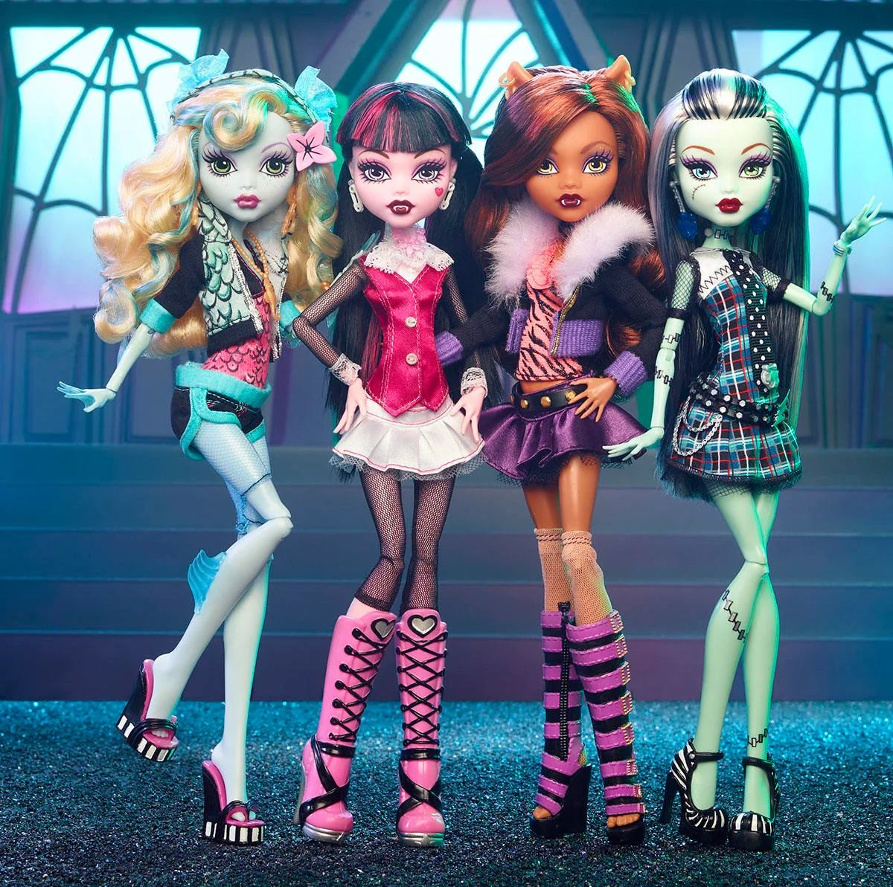
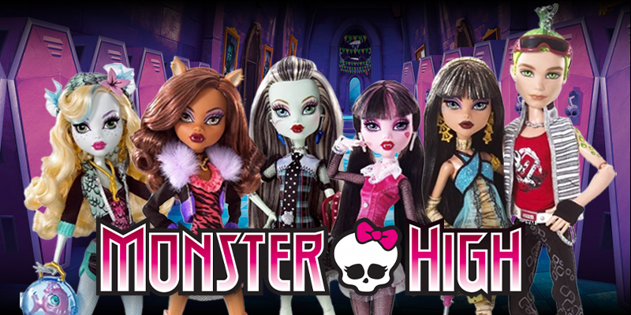

What is Monster High?
Monster High is an American franchise created by toy designer Garrett Sander and launched by Mattel in 2010, aimed primarily at children aged 7-16. The franchise revolves around the adventures of teenage descendants of famous monsters and other mythical creatures attending a high school called Monster High in the fictional town of New Salem. Unlike other schools in the franchise's universe, Monster High welcomes all types of monsters, promoting diversity and inclusion

The characters are diverse and imaginative. Female characters are called "ghouls," and male characters are called "mansters". The original main character, Frankie Stein, is the daughter of Frankenstein's monster and his bride, depicted with mint-green skin and white hair with black streaks. The franchise emphasizes individuality, self-acceptance, and embracing differences, often addressing themes like social anxiety, bullying, and personal growth.
